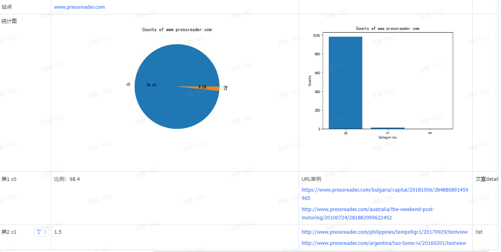
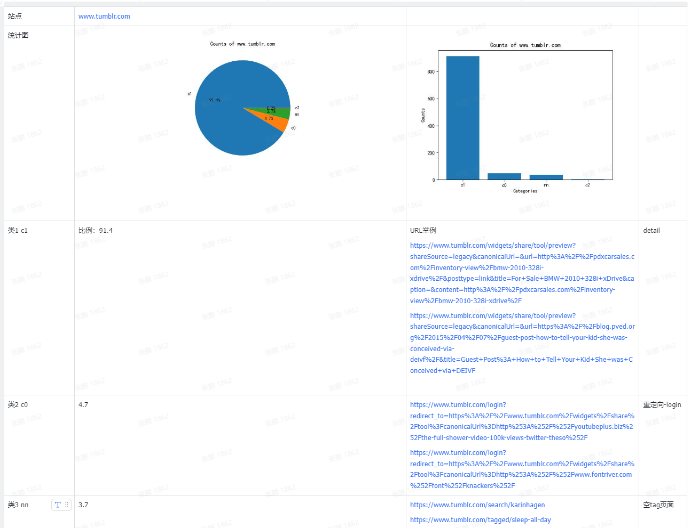

雪重
Python Developer
知识 汗水 灵感 机遇
基于结构和样式相似度的html聚类研究
参考论文：https://sci-hub.se/10.1109/IRI.2016.30
论文中提到的几点，网页结构相似度，样式相似度，聚类。本文依据论文思路和相关算法，用代码大致复现。
结构相似度
文中提到了APTED全路径树编辑距离算法。
from lxml import html
from apted import APTED, helpers
def lxml_to_tree_structure(html_content):
tree = html.fromstring(html_content)
def parse_node(node):
if isinstance(node, html.HtmlElement):
tag = node.tag
children = [parse_node(child) for child in node.iterchildren()]
return '{%s%s}' % (tag, ''.join(children))
elif isinstance(node, html.HtmlComment):
return ""
else:
return ""
return parse_node(tree)
def structural_similarity(html_1, html_2):
# 转换为APTED的树表示
tree1 = helpers.Tree.from_text(lxml_to_tree_structure(html_1))
tree2 = helpers.Tree.from_text(lxml_to_tree_structure(html_2))
apted_class = APTED(tree1, tree2)
# 计算编辑距离
distance = apted_class.compute_edit_distance()
# print(distance)
# 计算相似度
return 1 - distance / (apted_class.it1.tree_size + apted_class.it2.tree_size)
但当我们实际使用时，发现算法复杂度极高，尤其对于当前时代的网页结构，dom节点更为丰富的情况下，可尝试优化为使用 html 标签的序列比较来计算相似度。
样式相似度
from lxml import etree
def get_classes(html):
doc = etree.HTML(html)
classes = set(doc.xpath('//*[@class]/@class'))
result = set()
for cls in classes:
for _cls in cls.split():
result.add(_cls)
return result
def jaccard_similarity(set1, set2):
set1 = set(set1)
set2 = set(set2)
if len(set1) == 0 and len(set2) == 0:
return 1
intersection = set1.intersection(set2)
union = set1.union(set2)
return len(intersection) / len(union)
def style_similarity(page1, page2):
"""
Computes CSS style Similarity between two DOM trees
A = classes(Document_1)
B = classes(Document_2)
style_similarity = |A & B| / (|A| + |B| - |A & B|)
:param page1: html of the page1
:param page2: html of the page2
:return: Number between 0 and 1. If the number is next to 1 the page are really similar.
"""
classes_page1 = get_classes(page1)
classes_page2 = get_classes(page2)
return jaccard_similarity(classes_page1, classes_page2)
聚类
文中使用的是共享最近邻算法，复现时使用DBSCAN，一种基于密度的聚类方法。
import numpy as np
from sklearn.cluster import DBSCAN
htmls = ["<html></html>",]
threshold = 0.9
similarity_matrix = np.zeros((len(htmls), len(htmls)))
# 需要计算相似度矩阵, similarity_matrix由结构相似度和样式相似度计算得到
"""
code...
"""
# 假设你有一个距离矩阵
# 注意，DBSCAN需要一个距离矩阵，而不是相似度矩阵
# 你可能需要将你的相似度矩阵转换为距离矩阵，例如，通过 d = 1 - s
distance_matrix = 1 - similarity_matrix
# 使用DBSCAN进行聚类
# eps是邻域的大小，min_samples是形成核心对象所需要的最小邻居数目
# 你可能需要调整这些参数来得到好的聚类结果
clustering = DBSCAN(eps=1 - threshold, min_samples=2, metric='precomputed')
labels = clustering.fit_predict(distance_matrix)
结果
从cc数据中抽取了部分域名的网站，聚类结果大致如下：

